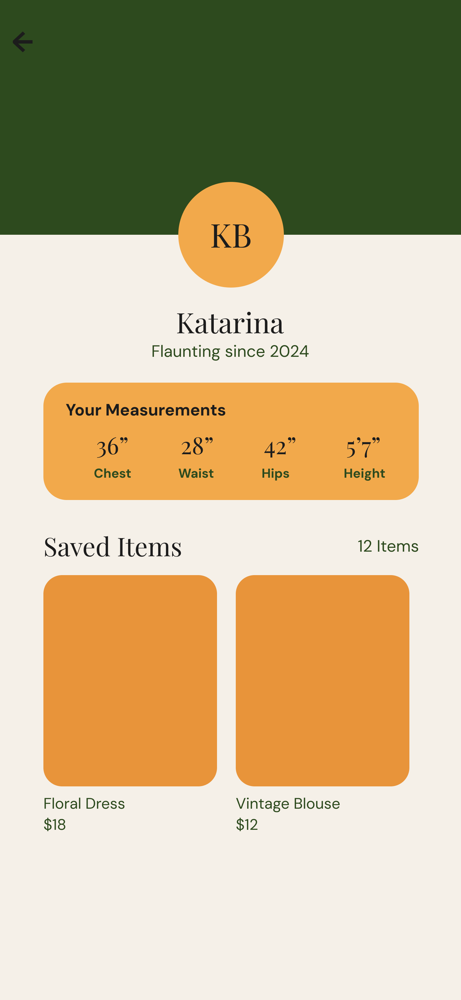
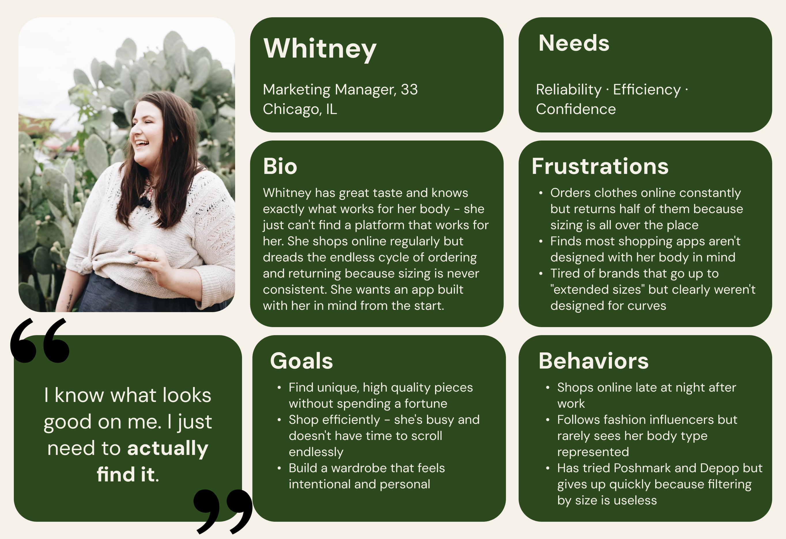
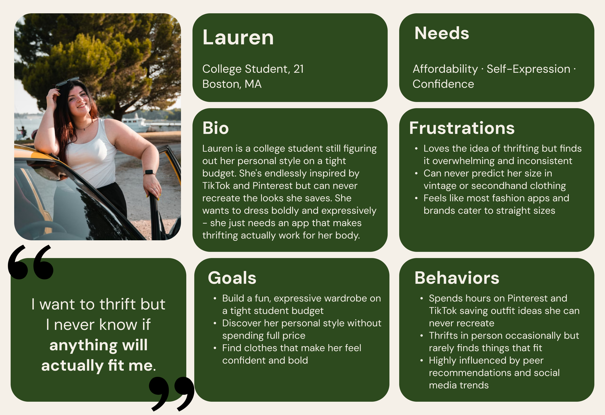

01. Overview
Flaunt is a mobile shopping app concept designed for curvy women navigating the wildly inconsistent sizing of secondhand and thrift shopping. As a passion project, I set out to design something that felt less like a workaround and more like a genuine solution: an app that replaces guesswork and size labels with real body measurements, so you know an item will fit before you buy it. Bold, retro, and unapologetically confident, Flaunt was built to feel like a best friend's closet, not a fitting room.
"A medium in one brand. An extra large in
another. For curvy women, sizing is broken."
02. Opportunity
As a curvy woman, finding clothes that actually fit is a constant frustration. Sizing is inconsistent across every brand - a medium in one label fits completely differently than a medium in another. Secondhand shopping makes this even harder, since you can't try anything on. Flaunt was designed to solve this personally felt problem by shifting the focus away from size labels entirely and toward real body measurements.
03. Design Process
The process began with defining the core user problem and what the solution needed to feel like - not clinical or corrective, but celebratory and fun. From there, five key screens were mapped out to tell a complete user story: onboarding, measurement setup, home feed, item page, and profile. Once the structure was clear, the visual design followed. A retro orange, olive green, and cream palette was chosen to give Flaunt a warm vintage thrift store personality. Typography paired Playfair Display for bold editorial moments with DM Sans for clean readable body text.



Pictured above: views of the final designs.
(Left to right: Home Page, Item Page, Profile Page.)
04. Solution & Results
The result is a five screen app concept that puts fit first. Flaunt's signature Fit Score feature tells users whether a specific item will fit their chest, waist and hips before they buy, replacing unreliable size labels with real data. The visual design balances bold retro personality with minimalist clarity, creating an app that feels as confident and expressive as the women it was built for.
05. Building the Brand
Flaunt needed to feel like a best friend's closet - warm, personal, and full of personality. Every design decision was made to celebrate curves rather than just accommodate them.
-
Olive
#2D491E
-
Rust
#E7943A
-
Amber
#F1A94C
-
Cream
#F4EFE7
Playfair Display
- editorial and confident
- used for headlines and key moments
DM Sans
- clean and modern
- used for body text and UI elements
06. Personas
Persona 1: The Returner
These are experienced online shoppers who know their style but are constantly let down by inconsistent sizing. They don't need inspiration, they need a platform they can actually trust to get the fit right.

Persona 2: The Newbie
These are trend-driven, budget conscious shoppers who are full of style inspiration but struggle to translate it into real outfits that fit their body. They're highly influenced by social media and just need an app that makes thrifting feel accessible.

View the Prototype
Explore the interactive mobile app prototype for Flaunt, showcasing the app's design and layout. Click below to see the full experience in Figma.
View Prototype